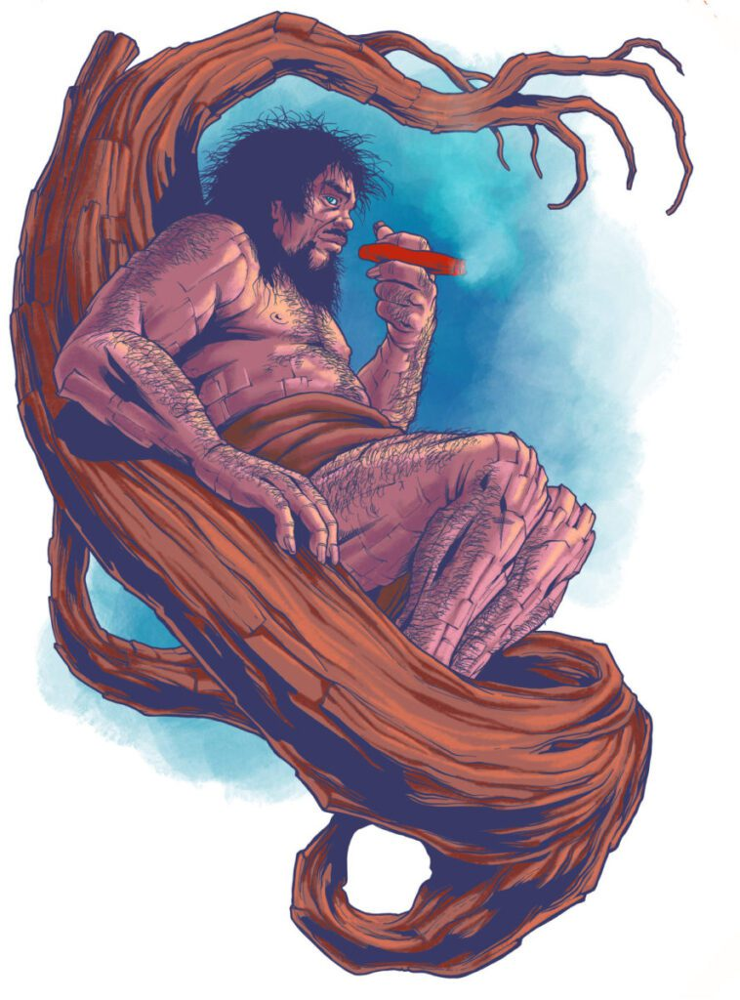

Years passed, and Nina grew older, yet Kapre remained a silent guardian of the forest. Villagers still whispered of the giant in the trees, but those who knew the truth saw him as a protector. The girl who once feared him now cherished the bond forged in the shadows of the Balete woods.
Even monsters can love, even legends can teach. The forest thrived under Kapre’s watch, a testament to the strange friendship between human and guardian, fear and respect intertwined for generations.